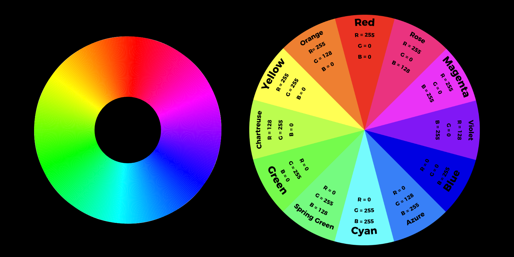
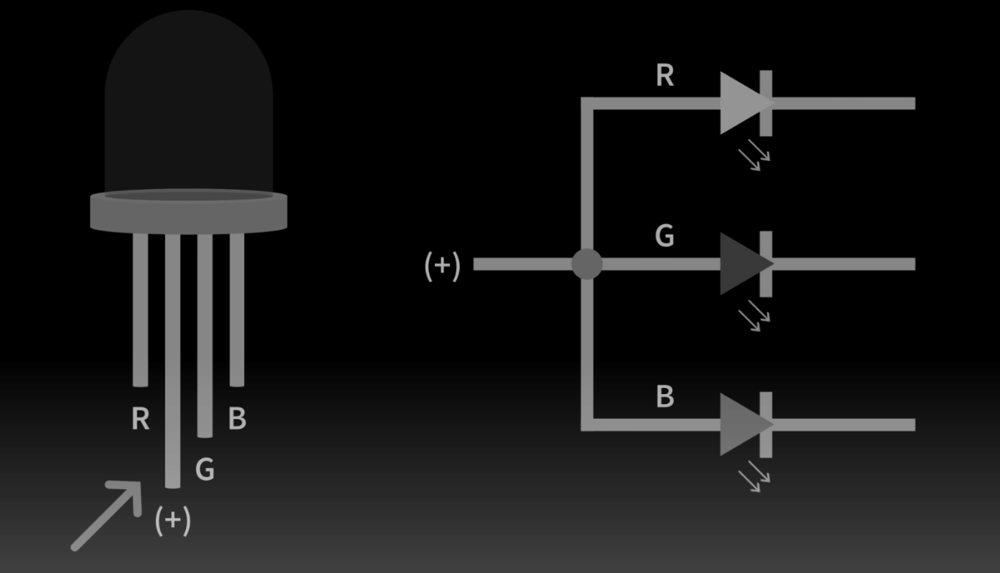

# arduino project ideas & first attempt
# ---------------------------------
I began this week by thinking of a suite of potentially interlinking (e.g. humidifier changes LED) microcontroller programming projects that could complement the mist maker:
- propeller fan to control the speed of mist diffusion
- multi-color LED lights to provide vibrancy to the fog
- humidity and temperature sensing
- on/off switch for the humidifier
- water level indicator
- voice control integration
I ran with my first idea, which was to build in speed controls into a fan and add 3 LED lights of different colors that would light up depending on the speed of the fan.

For the first while of tinkering, I worked with a fan I found in one of the closet shelves. Bobby suggested I try attaching the fan to the driver motor to make it easy to control the motors, but we soon found out that the fan ran on 12V and so it couldn’t be powered. Figuratively and literally, I decided to shelve the fan idea for now, and return to it at a later point.
As a second project, while looking at the various LED options available in the lab, I was interested in the RGB options, given that I could play around with variations of the color wheel.


I found a reference project which essentially blinks three different colors (red, green, and blue) in various sequences as programmed. Since I had out a potentiometer for the fan already, I thought it would be cool to play around with the dials to change the degree of each RGB LED color. The idea was that depending on how much of each dial you crank, you would end up with a different color/mix as shown in the color wheel above.